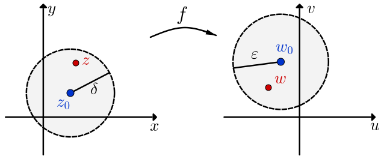

Let a function $f$ be defined at all points $z$ in some deleted neighborhood
of $z_0.$ The statement that the limit of $f (z)$ as $z$ approaches $z_0$ is a number $w_0,$ or
that
\begin{eqnarray}\label{limit001}
\lim_{z\rightarrow z_0}f(z)=w_0
\end{eqnarray}
means that the point $w = f (z)$ can be made arbitrarily close to $w_0$ if we choose
the point $z$ close enough to $z_0$ but distinct from it.
Formally, the expression (\ref{limit001}) means that for every (sufficiently small)
$\varepsilon>0,$ there is a
$\delta>0$ such that
Under the mapping $w = f (z),$ all points
interior to the circle $|z - z_0| = \delta$ with $z_0$ deleted are mapped to points interior to
the circle $|w - w_0| = \varepsilon,$ see Figure 1. The limit will exist only in the case when $z$
approaches
$z_0$ (that is, $z \rightarrow z_0$) in an arbitrary direction; then this implies that
$w
\rightarrow w_0.$

Geometric interpretation of limit.
Limits are unique if they exist.
Suppose that $\lim_{z\rightarrow z_0}f(z)=w_0$ and $\lim_{z\rightarrow z_0}f(z)=w_1$ with
$w_0\neq w_1.$ Let $2\varepsilon =|w_0-w_1|,$ so that $\varepsilon >0.$
There is a $\delta>0$ such that $0\lt|z-z_0|\lt\delta$ implies that
$|f(z)-w_0|\lt\varepsilon$ and $|f(z)-w_1|\lt\varepsilon.$ Choose a point
$z$ different to $z_0$ (because $f$ is defined in a deleted
neighborhood of $z_0$). Then, using the triangle inequality,
$$|w_0-w_1|\leq |w_0-f(z)|+|f(z)-w_1|\lt2\varepsilon.$$
But this is a contradiction. Thus $w_0=w_1.$ $\quad \blacksquare$
Example 1: Show that
$$\lim_{z\rightarrow z_0}z^2=z_0^2.$$
Discussion:
Let's take $\delta = 1.$ So $0\lt\left| z-z_0\right|\lt\delta=1$ implies that
Now, if $\delta=\dfrac{\varepsilon}{1+2\left|z_0\right|},$ then $0\lt\left| z-z_0\right|\lt\delta$
implies that
$$\left| z^2-z_0^2\right|\lt \left(1+2\left|z_0\right|\right)\lt\varepsilon.$$
This means that
$$\left| z^2-z_0^2\right|\lt\varepsilon \quad\text{whenever}\quad 0\lt\left| z-z_0\right|\lt\delta$$
where $\delta=\min\left\{1,\dfrac{\varepsilon}{1+2\left|z_0\right|}\right\}.$
Now we can proceed to write our formal proof.
Proof:
Let $\varepsilon>0.$ Choose
$\delta=\min\left\{1,\dfrac{\varepsilon}{1+2\left|z_0\right|}\right\}$ such that
$0\lt\left| z-z_0\right|\lt\delta.$ Therefore
$$
\left| z^2-z_0^2\right|\lt\varepsilon. \quad \blacksquare
$$
There is a connection between
the limits of complex functions $f(z)$ and the limits of
real-valued functions of two real values $g(x,y).$
The latter type are studied in calculus and we can use their
definition and properties, like the following:
Consider
$f(z)=u(x,y)+iv(x,y)$
and
$z_0=x_0+iy_0,$ $w_0=u_0+iv_0.$
Then
\begin{eqnarray}\label{limitpart01}
\lim_{z\rightarrow z_0}f(z)=w_0
\end{eqnarray}
if and only if
\begin{eqnarray}\label{limitpart02}
\lim_{\left(x,y\right) \rightarrow \left(x_0,y_0\right)}u\left(x,y\right)=u_0\quad \text{and}\quad
\lim_{\left(x,y\right) \rightarrow \left(x_0,y_0\right)}v\left(x,y\right)=v_0
\end{eqnarray}
Proof
First, let us assume that limit (\ref{limitpart01}) holds.
Thus, for each positive number $\varepsilon,$ there is a positive number
$\delta$ such
that
\begin{eqnarray}\label{limpart05}
|(u + iv) -(u_0 + iv_0)| \lt \varepsilon
\end{eqnarray}
whenever
\begin{eqnarray}\label{limpart06}
0 \lt |(x + iy) - (x_0 + iy_0)| \lt \delta
\end{eqnarray}
But
which proves that limits (\ref{limitpart02}) hold.
Now, we assume that limits (\ref{limitpart02}) hold in order to obtain limit
(\ref{limitpart01}).
Limits (\ref{limitpart02}) tell us that for each positive number $\varepsilon,$ there exist
positive
numbers $\delta_1$
and $\delta_2$ such that
That is, limit (\ref{limitpart01}) holds, and this completes the proof of the theorem.
$\blacksquare$
Example 2: Show that
$$\lim_{z\rightarrow 0}\dfrac{z}{\overline{z}}$$
does not exist.
Solution:
Suppose that the limit exists. Thus we can calculate it by letting the point $z = x+iy$
approach the origin in any manner. However, when $z = x+i0$ is a nonzero point on the
real axis
$$f(z)=\frac{x+i0}{x-i0}=1;$$
and when $z=0+iy$ is a nonzero point on the imaginary axis,
$$f(z)=\frac{0+iy}{0-iy}=-1.$$
Thus, if we let $z$ approach the origin along the real axis, we found that the
limit is $1.$ On the other hand, if we approach along the imaginary axis we found the limit
$-1,$ which is a contradiction because a limit is unique.
Therefore we must conclude that limit
$$\lim_{z\rightarrow 0}\dfrac{z}{\overline{z}}$$
does not exist.
In addition to computing specific limits, Theorem 2
is also an important theoretical tool that allows us to
derive many properties of complex limits from properties
of real limits. The following theorem gives an example of this procedure.
Suppose that
\begin{eqnarray}
\lim_{z\rightarrow z_0}f(z)=w_1\quad \text{and}\quad \lim_{z\rightarrow z_0}g(z)=w_2\label{limithypo}
\end{eqnarray}
Then
\begin{eqnarray}
\lim_{z\rightarrow z_0}\big[c\cdot f(z)\big] &=& c\cdot \lim_{z\rightarrow z_0} f(z) \text{ with } c\in\C, \label{limitconst}\\
\lim_{z\rightarrow z_0}\big[f(z)+g(z)\big]=w_1+w_2,\label{limitsum}\\
\lim_{z\rightarrow z_0}\big[f(z)g(z)\big]=w_1w_2;\label{limitmult}
\end{eqnarray}
and, if $w_2\neq 0,$
\begin{eqnarray}
\lim_{z\rightarrow z_0}\frac{f(z)}{g(z)}=\frac{w_1}{w_2}.
\end{eqnarray}
Proof
For proving property (\ref{limitsum}), we must show that for any $\varepsilon >0$ we can find
$\delta >0$ such that
To estimate each term, we choose $\delta_1\gt 0$
so that $0\lt \left|z-z_0\right|\lt \delta_1$ implies
$\left|f(z)- w_1\right|\lt 1,$ and thus
$\left|f(z)\right|\lt \left|w_1\right|+1,$ since
$$\left|f(z) - w_1\right|\geq \left|f(z)\right|- \left| w_1\right|.$$
Given $\varepsilon\gt 0,$ set $\delta_2$ and $\delta_3$ such that
$0\lt \left|z-z_0\right|\lt \delta_2$ implies
$$\left|f(z)-w_1\right|\lt \frac{\varepsilon}{2\left(|w_2|+1\right)}$$
and
$0\lt \left|z-z_0\right|\lt \delta_3$ implies
$$\left|g(z)-w_2\right|\lt \frac{\varepsilon}{2\left(|w_1|+1\right)}.$$
Thus we can choose $\delta = \min\left\{\delta_1,\delta_2,\delta_3\right\}.$
If $0\lt \left|z-z_0\right|\lt \delta,$ then
If you found this interactive textbook helpful, consider becoming a member in:
This project is made possible by the kindness of supporters like you.
Your contributions enable me to maintain the site, uphold the applets,
and, crucially, ensure it remains freely accessible to anyone eager to
explore this captivating field of mathematics —without any distracting ads.
If you prefer to donate just once,
not monthly, you can use these links:
You can't contribute this time, no worries! Maybe you just want to: